Deathclaw
チE��クロー
「でかい……でかい……人間三人分の大きさだ……爪は俺の腕ほどもある！引き裂かれた……引き裂かれた……」
── トレント・バリスター、『Fallout』
デスクローは、その特徴的な巨大な爪から俗にそう名付けられた、遺伝子工学で生み出された爬虫類型クリーチャーです。
エンクレイヴが合衆国政府の秘密プロジェクトとして、人間兵士に代わるスーパーソルジャー——高リスクの捜索殲滅任務を遂行できる安価で使い捨ての戦闘部隊——を開発するために作り出しました。
大戦後に野生に放たれたデスクローの個体群は爆発的に増加・進化し、北米のウェイストランドにおける頂点捕食者となりました。
背景
起源
デスクローと呼ばれるようになるクリーチャーは、エンクレイヴが行った科学実験から生まれました。
危険な戦闘任務で使い捨てにできる、安価な人間兵士の代替として開発されたものです。
複数の動物種を遺伝子的に混合して生み出され、主なベースとなったのはジャクソンカメレオン（角のある品種）でした。
このプロジェクトは、ほぼあらゆる環境で自力で生存・繁殖できる獰猛な捕食者を生み出すことに成功しました。
少なくとも1体のデスクローが2077年以前に実戦テストされたことが知られており、日中戦争のさなかにアラスカの島で中国人民解放軍の部隊に対して投入されています。
極秘プロジェクトであったため、このクリーチャーに関する知識はエンクレイヴ内部の他の部門ですら共有されていないほど限定的でした。
一般市民が知ることは当然想定されていませんでしたが、事故的な目撃事件は発生しています。
米国海兵隊員のクーパー・ハワード（後のグール）は、デスクローがテストされていたのと同じアラスカの島に配備されていた際にそれと遭遇しています。
デスクローは数名の中国兵を虐殺しましたが、クーパーと対面してもなぜか彼の命を奪いませんでした。
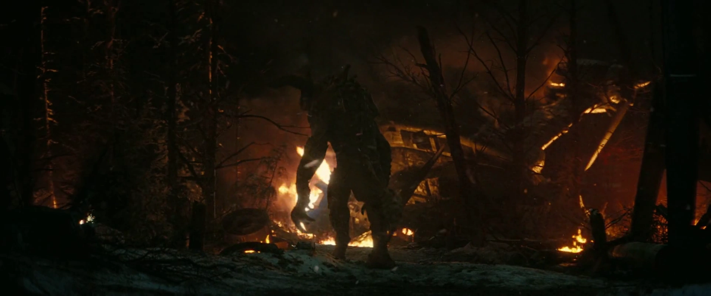
戦後の拡大
大戦後、生き残った新種のデスクローは封じ込めから逃れ、ウェイストランドへと脱出しました。
その個体数は飛躍的に増加し、大陸全土に広がりました。
2102年の時点で、アパラチアにもデスクローの存在が確認されており、既にその名で呼ばれていました。
22世紀後半には、デスクローの生理機能はマスターによる遺伝子操作でさらに洗練されました。
ニューカリフォルニアでの最初の目撃報告は孤立した巣に限られていたため、当初デスクローは伝説的な破壊の生き物として認識されていました。
しかしボーンヤードの住民は他の地域よりも早くその存在を認識していました——2161年頃に1体のデスクロー・マザーとその子供たちがこの地域の一部を占拠し、ガン・ランナーズのような武装集団を膠着状態に追い込んでいたためです。
知性デスクロー
西海岸エンクレイヴは2235年頃からデスクローの研究を再開し、改良FEVを用いて知性を人為的に増強したデスクローの群れを作り出しました。
2242年5月17日、初の実戦投入が行われ、知性デスクロー部隊がVault 13に送り込まれました。
エンクレイヴは住民の拉致を隠蔽するためにデスクローを配備しましたが、予想外の出来事が起きます。
戦闘テスト後、誰も予測しなかったほど知性を発達させたデスクローたちは、創造者との繋がりを断ち切り、Vaultで平和な暮らしを築こうとしたのです。
グルーサー率いるこの群れは、歴史上初めての非人型知性生命体としてユニークな文化を発展させました。
しかし、この群れの存在とその高度な知性はやがてエンクレイヴに発覚します。
秘密情報部エージェント、フランク・ホリガン率いる殲滅部隊がVaultに派遣され、知性デスクローは壊滅しました。
ゴリスとザーンだけがVaultに不在だったため唯一の生存者となりました。
生物学
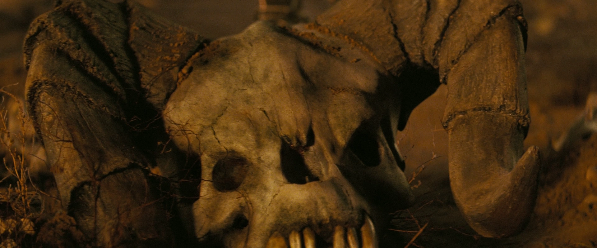
デスクローは大型の肉食二足歩行爬虫類で、最大限の殺傷力を持つように設計されています。
二足歩行は頭部の位置を高くし、視野を広げてターゲットの探知能力を向上させます。
上肢は二足歩行により解放され、極めて危険な武器として特化されました。
四足動物ほどの走行速度はありませんが、獲物を追いかける際に四つ足で走ることも観察されています。
ジャクソンカメレオンの系統から対向する親指を持ち、さらに2本の指がゲノムにコードされ、各手に合計4本の指があります。
爪は鋭い刃で終わり、一振りで非武装の人間を真っ二つに切り裂くできるほどの切れ味を誇ります。
デスクローの皮膚は極めて頑丈で、銃器や刃物に対する優れた防御を提供します。
角と背棘がこの防御をさらに強化し、近接戦闘は非常に危険です。
ただし、その鋭敏な感覚を逆手に取ることも可能です。
大きな音と強い光（フレアなど）は、デスクローの前進を抑止したり、接近を防ぐために利用できます。
行動
デスクローは群れで行動し、リーダーシップはアルファペア——群の中で最も強い雄と雌——が握ります。
群の他のメンバーはリーダーに従い、共に移動します。
群れ行動と結びついた激しい縄張り意識を持ちます。
通常は居住地域から離れた場所を選びますが（おそらく騒音を嫌うため）、一時的に放棄された人間の建物や地域に定着することもあります。
2161年のボーンヤードの倉庫や、2281年のクォーリー・ジャンクションがその例です。
一度縄張りを主張した群れを追い出すのは極めて困難です。
アルファ雄やパックマザーが殺されても縄張りを放棄せず、アルファ雌も死んだ場合には別の雄を選んで繁殖を続けます。
縄張りの奪還には通常、両方のリーダーを殺すか、群れ全体を殲滅する必要があります。
繁殖
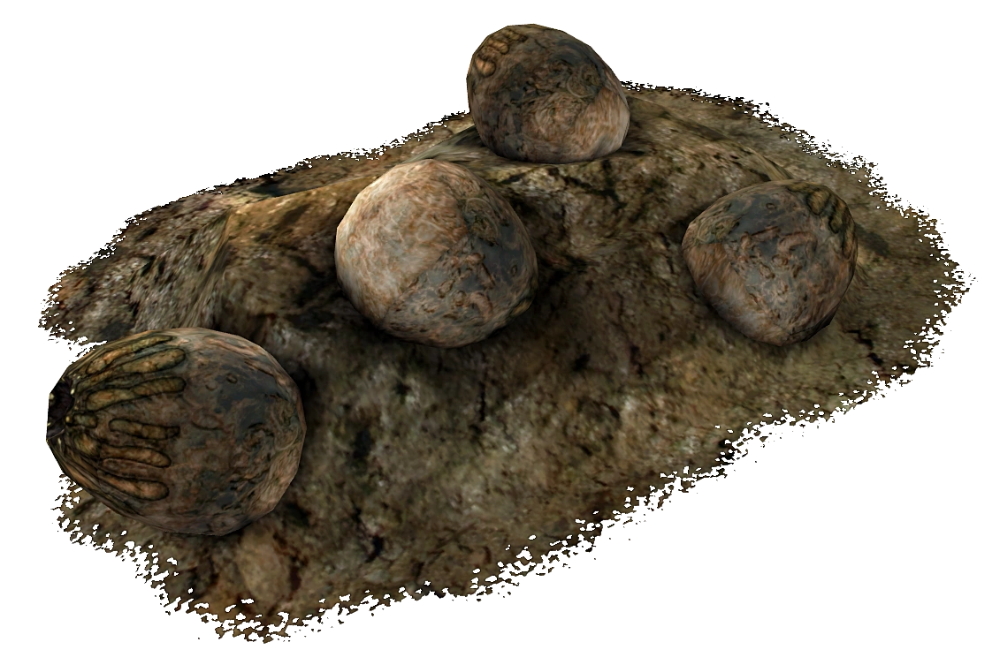
ジャクソンカメレオンとは異なり、デスクローは卵生です。
雌のデスクローは群れの最も強い雄（通常はアルファ雄）によって受精した卵をまとめて産みます。
デスクローの卵は大きく、重さは最大約0.5kg（2ポンド）に達し、驚くほど長い保存期間を持ちます。
幼体は目立つ角や背棘なしで生まれ、成長とともに発達します。
角は雄では前方に、雌では後方かつ上方に成長します。
ベビーデスクローは明るい黄色の肌で生まれ、成熟するにつれて暗くなります。
成体では深い茶色、さらに年老いた個体では黒、あるいは黒と青にまで変化します。
人間との関係
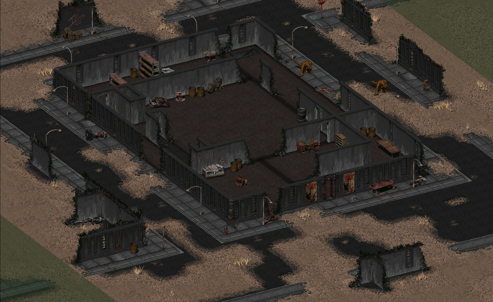
デスクローは積極的に人間の居住地を攻撃しませんが、人類の拡大は必然的に両種の接触をもたらします。
デスクローは人間にとって極めて危険であり、どれだけ準備を整えても安全とは言えません。
ブラザーフッド・オブ・スティールのパトロールでさえ、気づかずにデスクローの縄張りに入ると深刻な被害を受けることがあります。
デスクローの卵は珍味としても知られ、非常に栄養価が高くおいしいウェイストランドのオムレツの材料になります。
バリアント
ベビー・デスクロー
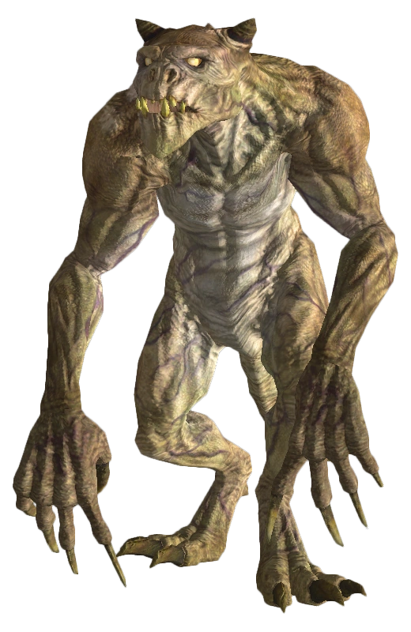
最も小さく若いデスクローですが、決して無害ではありません。
群れと母親の保護下にありながら、恐るべき爪とそれに見合った機動力を持っています。
成体の約40%の大きさです。
母親が殺されると、子供たちはその死体のもとに戻ります。
成体デスクロー
性的に成熟した雄のデスクローは、茶色の皮膚と完全に形成された角で容易に識別できます。
速く、致命的で、耐久力があり、ほとんどあらゆる脅威を容易に排除できます。
雄のデスクローは群れで行動し、単独の成体は例外的です。
アルファ雄のデスクロー
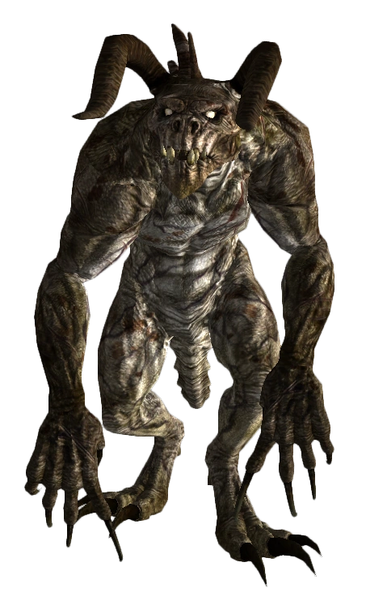
ウェイストランドの様々な危険を生き延びた完全に成熟したデスクローは、アルファに成長します。
角はより長く曲がり厚く、皮膚は年齢とともに暗い茶色から黒に変化します。
交配優先権を持ち、群れ全体を率います。
マザー・デスクロー（メイトリアーク）
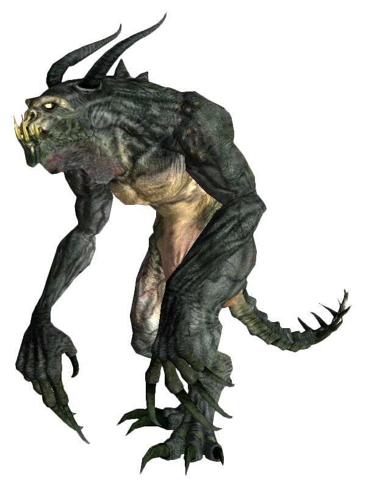
成体の雌デスクローは、オリーブと青が混ざった体色、後方に曲がる角、棘のある尾、目立つ皮膚のひだで区別されます。
マザー・デスクロー（メイトリアーク）は、群れの最も強力な雄によって受精した卵のみを産みます。
レジェンダリー・デスクロー
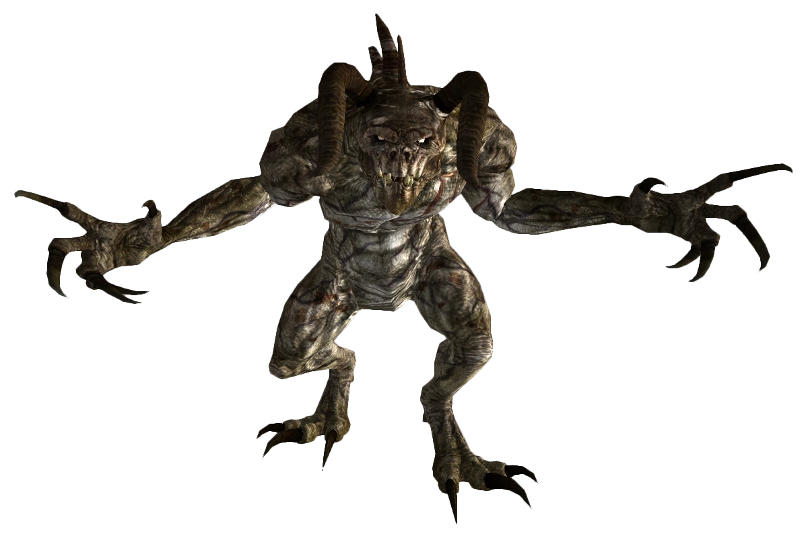
モハビのデッドウィンド・キャバーンでのみ発見される、十分に長く生き延びたアルファ雄デスクローです。
通常の成体より25%も大きく、それに見合った強大な角と爪を持ちます。
この個体は洞窟を探索しようとしたブラザーフッド・オブ・スティールのパラディンを殺害した張本人です。
エンクレイヴのデスクロー
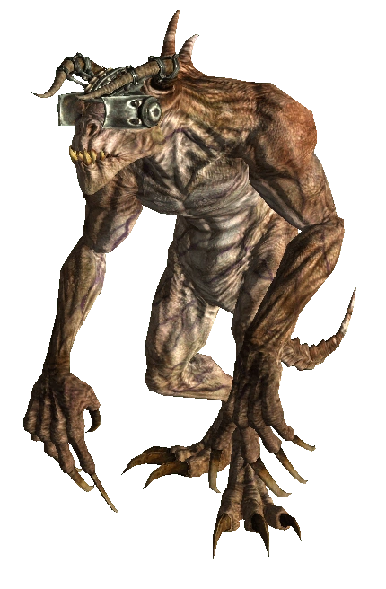
キャピタル・ウェイストランドでエンクレイヴに捕獲された成体デスクローには、家畜化ユニットが装着されることがあります。
頭蓋骨に取り付けられ脳に接続されるこの装置により、エンクレイヴの要員は番犬のようにデスクローを使役できます。
リオンズのB.O.S.はこの制御信号をスクランブルしてIFFを反転させるデバイスを開発しました。
ヘアリー・デスクロー
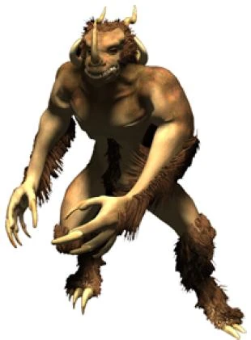
イリノイ州、ミズーリ州、カンザス州の領域に出現した、通常のデスクローとは完全に別の種です。
哺乳類に近い特徴を持ち、体が厚い毛皮に覆われています。
5本の角で形成される冠と1本の鼻角が特徴です。
天然の知性と自意識を発達させ、人間の会話を模倣する能力も持っています。
（Fallout Tacticsのみに登場）
開発裏話
デスクローの名前は、『Wasteland』に登場するシャドウクローから着想を得ています。
デザイナーのスコット・キャンベルによる初期コンセプトでは、デスクローはクズリとヒグマを遺伝子的に混合し、FEVで強化された毛むくじゃらの哺乳類でした。
しかし、アーティストが「毛が多すぎる」と指摘。当時のレンダリングソフトが毛の動きを正しく処理できなかったためです。
その後、新設のブラックアイルが『Planescape: Torment』の開発を開始。
最初のアート作品の一つとして「タラスク」という怪物が粘土で造形され、3Dモデル化されましたが、最終的にゲームには採用されませんでした。
こうして、毛むくじゃらのクズリ熊が毛のない爬虫類型の二足歩行生物に生まれ変わりました。
D&Dのモンスターマニュアルの339ページを見れば——まさにデスクローそのものです。
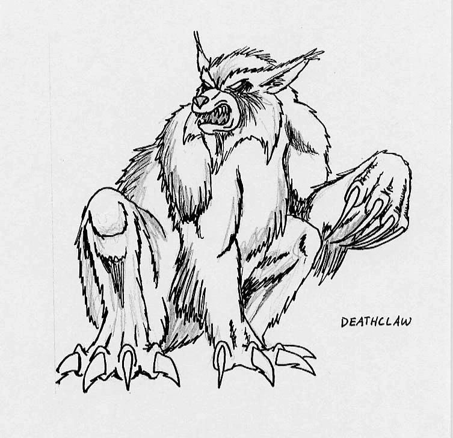
登場作品
デスクローはFallout、Fallout 2、Fallout 3、Fallout: New Vegas、Fallout 4、Fallout 76、Fallout Tactics、Fallout: Brotherhood of Steel、Fallout Shelter、Fallout TVシリーズに登場します。
ギャラリー
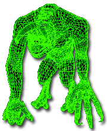
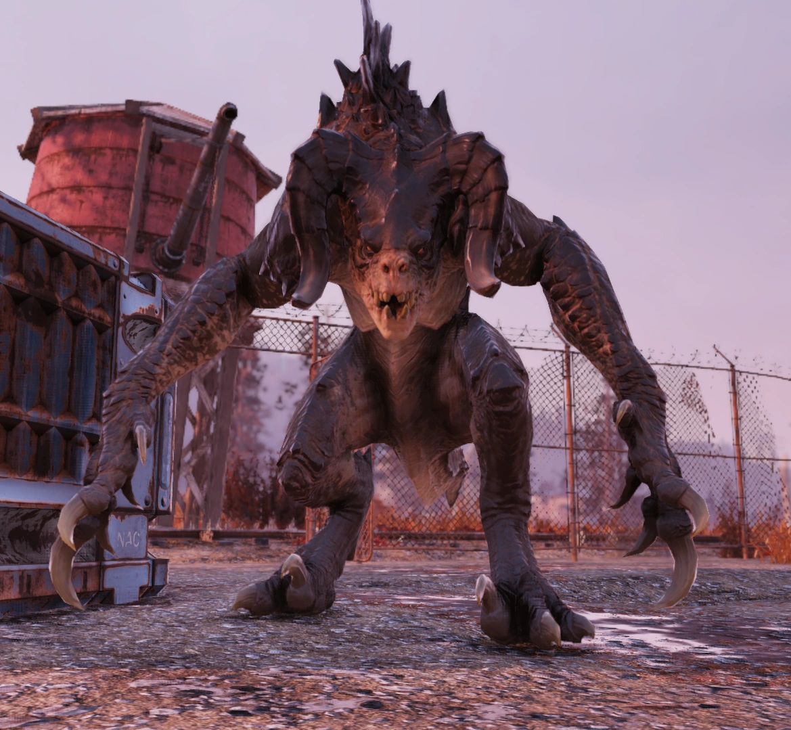
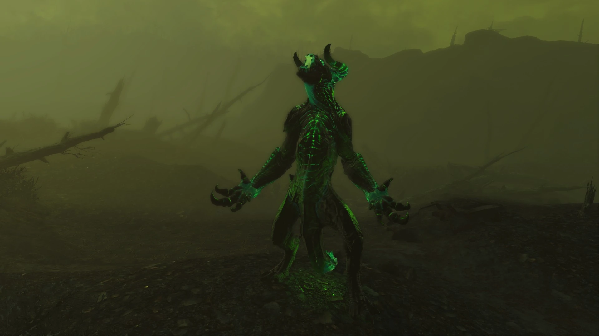
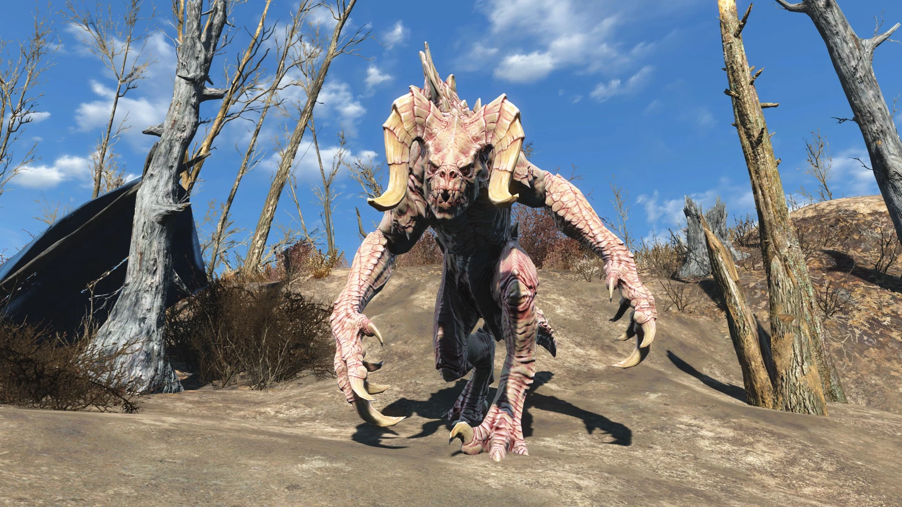
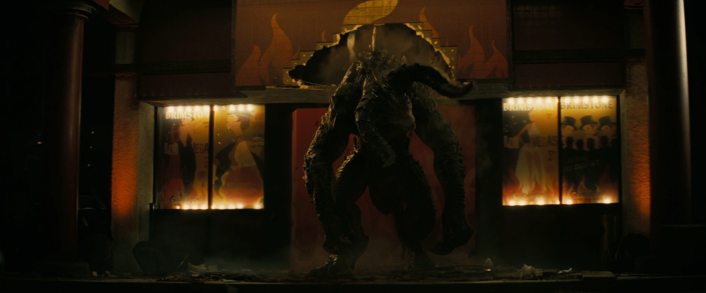
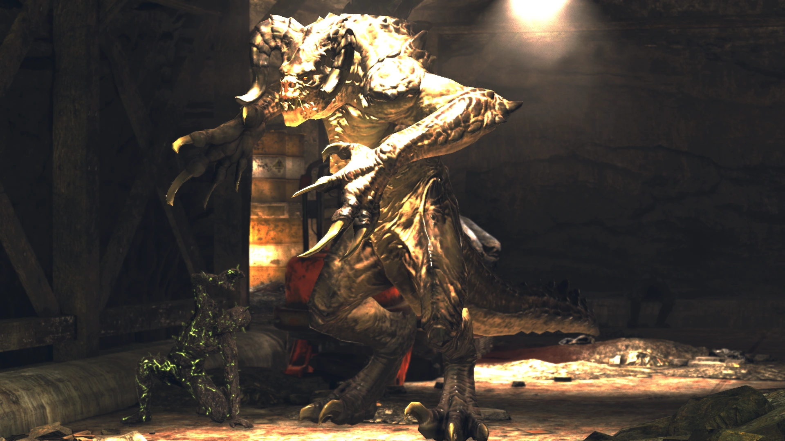
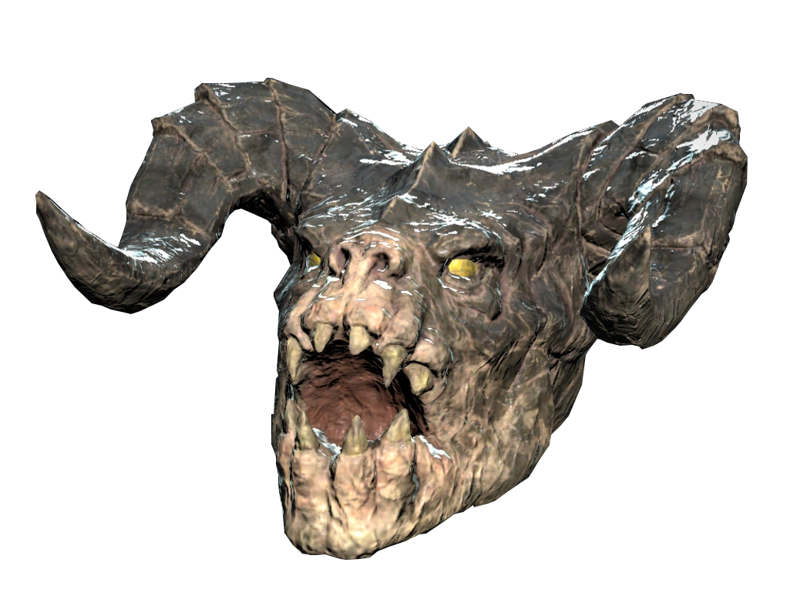
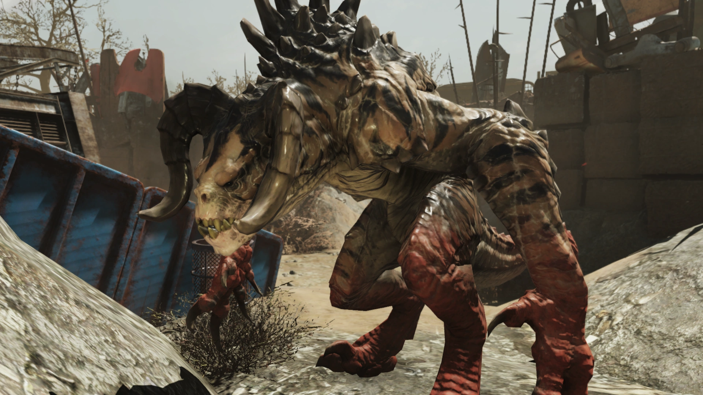
Falloutシリーズを代表するクリーチャーといえばやっぱりデスクロー。
初代Falloutから最新のTVシリーズまで、すべての作品に登場し続けているのは伊達じゃありません。
この記事を訳して一番驚いたのは、デスクローが単なるミュータントではなく、エンクレイヴが戦前に遺伝子工学で意図的に作り出した生物兵器だったということ。
ジャクソンカメレオンをベースに複数の動物種を混合して——という設定は、TVシリーズ シーズン2で具体的に描かれました。
アラスカの戦場でクーパー・ハワード（グール）がデスクローと遭遇するシーンは本当に鳥肌ものです。
Fallout 2の知性デスクロー、グルーサーの群れのエピソードも胸が熱くなります。
FEVで知性を与えられた結果、自意識と良心を発達させ、平和的な共存を目指したのに、エンクレイヴのフランク・ホリガンに殲滅されてしまった。
ゴリスとザーンだけが生き残ったという結末は、Falloutらしい物悲しさ。
開発裏話も面白いですよね。
初期はクズリとヒグマの毛むくじゃらのデザインだったのに、「毛が多すぎ」で描画できず、たまたまD&Dのタラスクの粘土モデルがあったからそれがベースになったという。
偶然の産物が、ゲーム史に残るモンスターになったわけです。
This article was created by translating and editing Deathclaw from Nukapedia: The Fallout Wiki.
Licensed under the Creative Commons Attribution-Share Alike License (CC BY-SA 3.0).
コミュニティ維持のため、寄付を受け付けております。
> COMMENTS